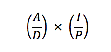
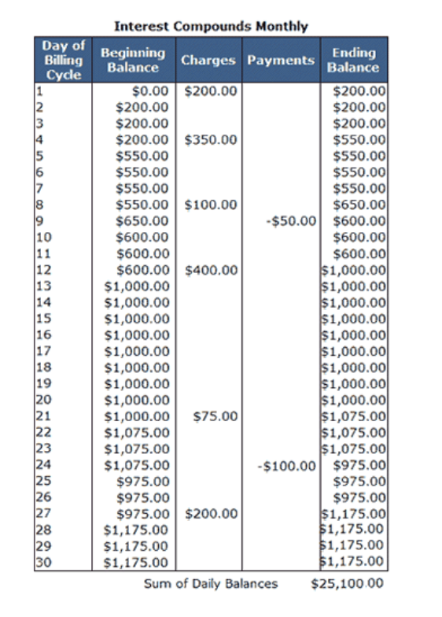

Problem made by Lockheed Martin, is CodeQuest 2017 Problem 12
This problem has a difficulty of 70
Personal debt is a huge political issue that affects many people, partly because they don’t understand how credit cards work. Fortunately for you, a large credit card company has hired your team to develop an algorithm to compute the monthly interest charged to their customers for balances owed on their credit cards. The credit card company computes the interest owed by its customers using the following formula:

Where:
A = the sum of the daily balances in the billing period
D = number of days in the billing period
I = annual interest rate
P = number of billing periods per year
Below is an example credit card statement for a card that charges an 18% annual rate of interest:

The monthly interest charges for the period are:
($25,100 / 30) x (0.18 / 12) = $12.55
The first line of the file Prob12.in.txt will contain a positive integer T denoting the number of test cases that follow. Each test case will have the following input:
• The first line will contain a single integer N denoting the number of days in the billing cycle
• The next N lines will contain a comma delimited list of information about each day in the billing cycle in the following format:
Note that purchases increase the daily balance, and payments decrease it.
2
30
1,200.00,
2,,
3,,
4,350.00,
5,,
6,,
7,,
8,100.00,
9,,50.00
10,,
11,,
12,400.00,
13,,
14,,
15,,
16,,
17,,
18,,
19,,
20,,
21,75.00,
22,,
23,,
24,,100.00
25,,
26,,
27,200.00,
28,,
29,,
30,,
31
1,300.00,
2,,
3,,
4,450.00,
5,,
6,,
7,,
8,100.00,
9,,50.00
10,,
11,,
12,800.00,
13,,
14,,
15,,
16,,
17,,
18,,
19,,
20,,
21,75.00,
22,,
23,,
24,,100.00
25,,
26,,
27,200.00,
28,,
29,,
30,,
31,,
For each test case provided in the program input, your program should print the amount of monthly interest that will be charged to the customer using an 18% annual rate of interest. The beginning balance at the start of each month is always 0. Use the rounding rules found in Appendix A if you need to round your answers. Make sure you print two digits for your cents.
$12.55
$19.44